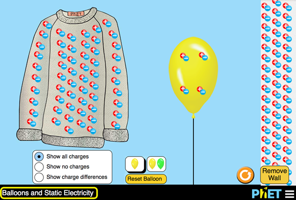
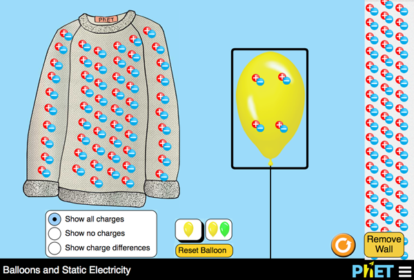
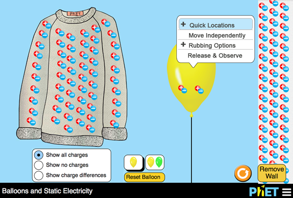
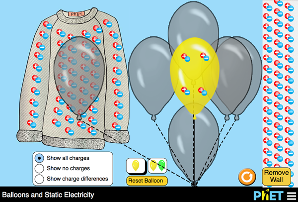
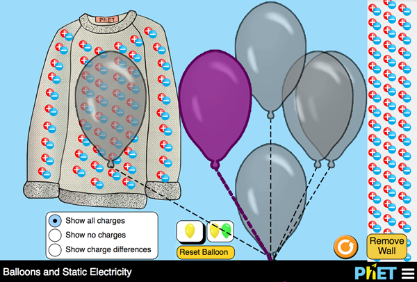
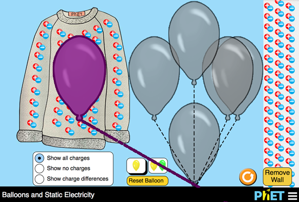
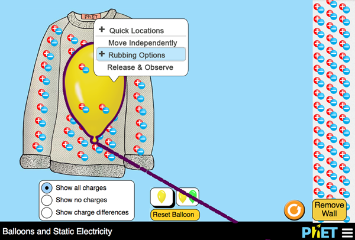
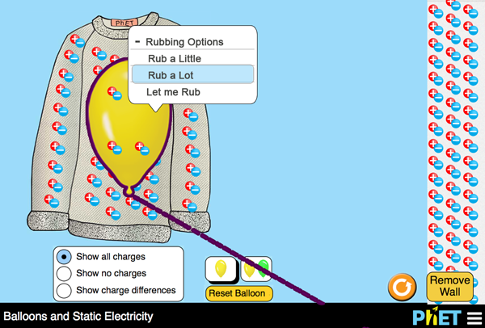
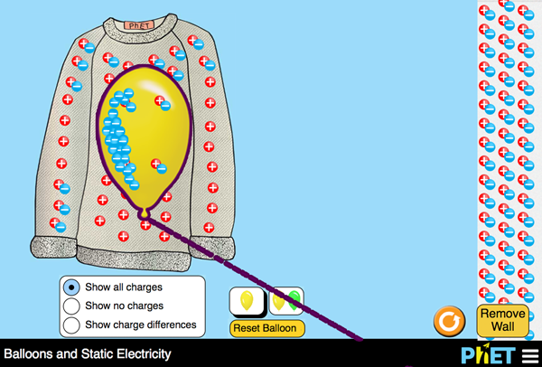

Exploring Interaction Menus for the Balloon Object
Scenario: The first 9 of 25 steps needed to setup an experiment in the Balloons and Static Electricity simulation.
Page Load

Non-visual feedback: Introducing Balloons and Static Electricity. The Play Area contains a woolly sweater on the left, a helium balloon in the middle, and a wall on the right. The charge of each object is represented by an even pattern of red circles with plus-signs and blue circles with minus-signs. Each object starts with equal amounts of positive and negative charges. The Control Panel contains settings to change views, add and remove objects and reset the experiment.
Directions: Select Tab for next item, the Yellow Balloon in the Play Area.
Tab to Yellow Balloon

Non-visual feedback: You are now in the Play Area on the yellow helium balloon. The balloon floats between a woolly sweater and a wall. The sweater is on the left and the wall is the right. All objects start with a balanced number of negative and positive changes.
Directions: Select Enter for Balloon Interactions. Down Arrow for next object in the Play Area. Tab to go to the Control Panel.
Down Arrow to next content

Non-visual feedback: Wooly Sweater. It currently has an even number of positive and negative charges.
Directions: Select Up Arrow to return to Balloon for interactions. Down Arrow for the Wall’s details. (Tab to go to Control Panel.)
Enter for Balloon Interactions

Non-visual feedback: You've got the Balloon, now experiment.
Directions: Select Enter Quick Locations; Down Arrow for next menu item.
Enter for Balloon Interactions

Non-visual feedback: You've got the Balloon, now experiment.
Directions: Select Enter Quick Locations; Down Arrow for next menu item.
Enter (or Space) for Quick Locations

Non-visual feedback: There are 6 quick locations, positioned like a grid around the Play Area.
Directions: Tab to first location and then use arrow keys to examine each location.
Enter or Space to select your location.
Esc key to exit quick locations.
Tab to first quick location

Non-visual feedback: Location 1, Middle and jest left of centre
Directions: Use Arrow keys to move to other quick locations.Enter or Spacebar to choose a location. Esc key to exit and return to Balloon Interactions.
Arrow left to Location 2

Non-visual feedback: Location 2, Near the sweater.
Directions: Use all Arrow keys to move like you are in a grid. Left Arrow moves towards the Sweater; Right Arrow towards the Wall. Enter or Spacebar to choose a location. Esc key to exit and return to Balloon Interactions
Arrow left to Location 3

Non-visual feedback: Location 3, On the sweater
Directions: Enter or Spacebar to choose a location. Esc key to exit and return to Balloon Interactions.
To be continued
I think I need a grid=selection area instead of ghost locations.